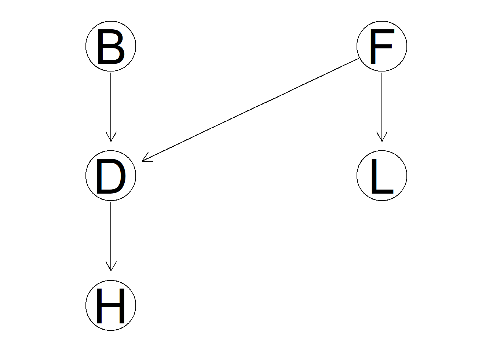
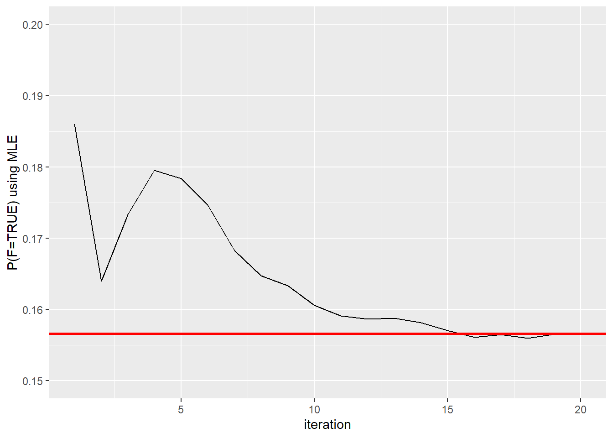
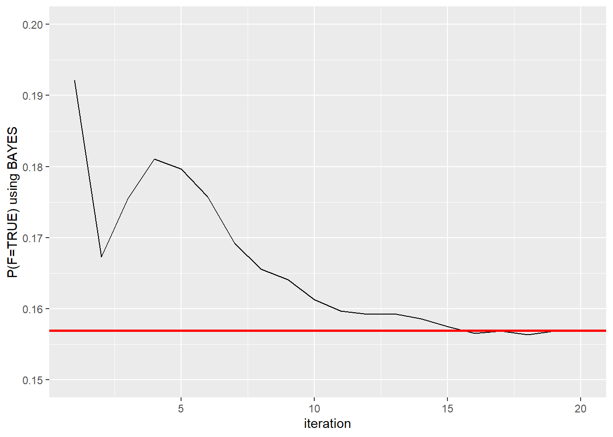
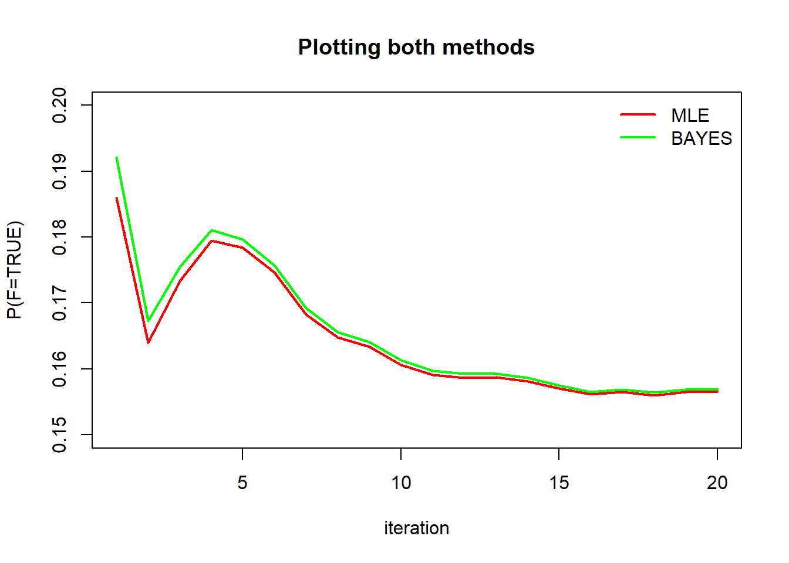
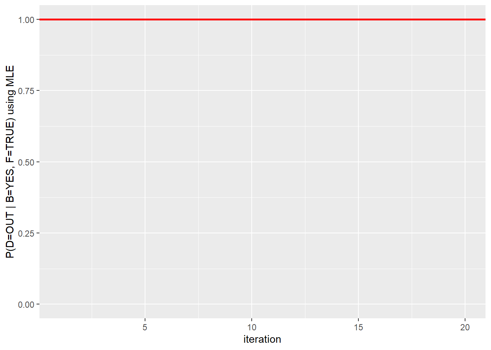
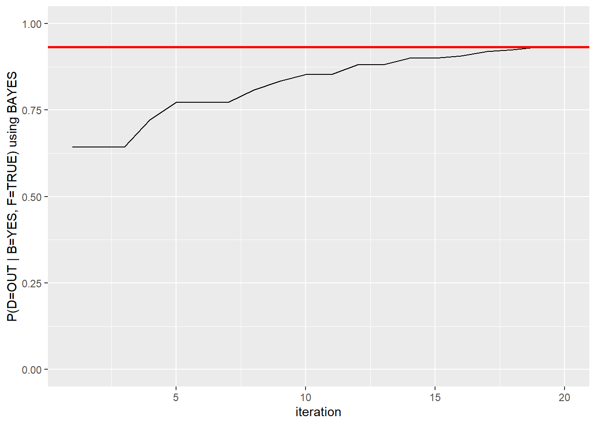
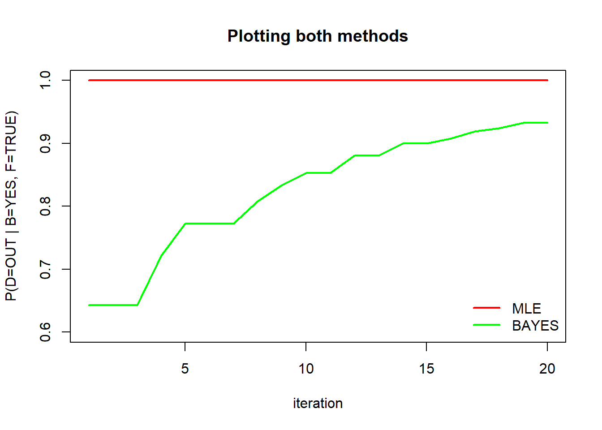

Chapter 3 Getting Started with …
3.1 What is BN?
A Probabilistic Network (aka causal graph, Bayesian belief network, etc.) is a graphical representation of a joint probability distribution.
3.2 Running Example: “Is the Family Out?”
When Mr. West goes home at night, he wants to know if his family is home before trying the doors (maybe because the most convenient door to enter is double locked when nobody is home.) Often, when Mrs. West leaves the house, she turns on an outdoor light. However, she sometimes turns on this light if she is expecting a guest. Also (and of course!) the Wests have a dog. When nobody is home, the dog is put in the backyard. The same is true if the dog has bowel troubles. Finally, if the dog is in the backyard, Mr. West will probably hear her barking (or what he thinks is her barking), but sometimes he can be confused by other dogs barking.
fo.data <- readRDS(url("https://github.com/canaytore/bayesian-networks/raw/main/data/fo_data.rds")) #fo.data is imported
head(fo.data)## B D F H L
## 1 NO IN FALSE NO FALSE
## 2 NO OUT TRUE YES FALSE
## 3 NO IN FALSE NO FALSE
## 4 NO OUT TRUE NO FALSE
## 5 NO OUT FALSE YES FALSE
## 6 NO IN TRUE NO TRUElibrary(bnlearn)
library(gRain)
library(ggplot2)
fo.dag <- model2network("[F][B][L|F][D|F:B][H|D]") #Family-out network is created
graphviz.plot(fo.dag)
Each iteration results will be collected in following arrays.
#First case: P(F=TRUE)
first.mle <- array(dim = 20)
first.bayes <- array(dim = 20)
#Second case: P(D=OUT | B=YES, F=TRUE)
second.mle <- array(dim = 20)
second.bayes <- array(dim = 20)Now that we have a model ( fo.dag ) and data ( fo.data ) We can learn the conditional probability tables (parameters) using the bn.fit function which implements the maximum likelihood maximization and a Bayesian method to learn parameters.
for(i in 1:20){
#P(F=TRUE) using mle:
first.mle[i] <- bn.fit(fo.dag, fo.data[1:(500*i),])$F$prob["TRUE"]
#P(F=TRUE) using bayes:
first.bayes[i] <- bn.fit(fo.dag, fo.data[1:(500*i),], method = "bayes", iss=10)$F$prob["TRUE"]
#P(D=OUT | B=YES, F=TRUE) using mle:
second.mle[i] <- bn.fit(fo.dag, fo.data[1:(500*i),])$D$prob["OUT","YES","TRUE"]
#P(D=OUT | B=YES, F=TRUE) using bayes:
second.bayes[i] <- bn.fit(fo.dag, fo.data[1:(500*i),], method = "bayes", iss=10)$D$prob["OUT","YES","TRUE"]
}Plotting P(F=TRUE) using mle:
first.mle #Each iteration results## [1] 0.1860000 0.1640000 0.1733333 0.1795000 0.1784000 0.1746667 0.1682857
## [8] 0.1647500 0.1633333 0.1606000 0.1590909 0.1586667 0.1587692 0.1581429
## [15] 0.1570667 0.1561250 0.1564706 0.1560000 0.1565263 0.1566000first.mle <- as.data.frame(first.mle)
first.mle$ssize <- 1:20 # add iteration column
ggplot(first.mle, aes(ssize, first.mle)) + geom_line() + geom_hline(yintercept = 0.1566, color="red", size=1) + xlab("iteration") + ylab("P(F=TRUE) using MLE") + ylim(range(0.15,0.2))
Plotting P(F=TRUE) using bayes:
first.bayes #Each iteration results## [1] 0.1921569 0.1673267 0.1754967 0.1810945 0.1796813 0.1757475 0.1692308
## [8] 0.1655860 0.1640798 0.1612774 0.1597096 0.1592346 0.1592934 0.1586305
## [15] 0.1575233 0.1565543 0.1568743 0.1563818 0.1568875 0.1569431first.bayes <- as.data.frame(first.bayes)
first.bayes$ssize <- 1:20 # add iteration column
ggplot(first.bayes, aes(ssize, first.bayes)) + geom_line() + geom_hline(yintercept = 0.1569431, color="red", size=1) + xlab("iteration") + ylab("P(F=TRUE) using BAYES") + ylim(range(0.15,0.2))
Plotting P(F=TRUE) comparing both mle and bayes methods:
plot(first.mle[,1], type="l", col="red", lwd = 2, xlab="iteration", ylab="P(F=TRUE)", ylim=range(0.15,0.20), main="Plotting both methods")
lines(first.bayes[,1], type="l", col="green", lwd = 2)
legend("topright", legend = c("MLE", "BAYES"), col = c("red","green"), bty='n', lty=1, lwd=2)
Plotting P(D=OUT | B=YES, F=TRUE) using mle:
second.mle #Each iteration results## [1] 1 1 1 1 1 1 1 1 1 1 1 1 1 1 1 1 1 1 1 1second.mle <- as.data.frame(second.mle)
second.mle$ssize <- 1:20 # add iteration column
ggplot(second.mle, aes(ssize, second.mle)) + geom_line() + geom_hline(yintercept = 1, color="red", size=1) + xlab("iteration") + ylab("P(D=OUT | B=YES, F=TRUE) using MLE") + ylim(range(0,1))
Plotting P(D=OUT | B=YES, F=TRUE) using bayes:
second.bayes #Each iteration results## [1] 0.6428571 0.6428571 0.6428571 0.7222222 0.7727273 0.7727273 0.7727273
## [8] 0.8076923 0.8333333 0.8529412 0.8529412 0.8809524 0.8809524 0.9000000
## [15] 0.9000000 0.9074074 0.9193548 0.9242424 0.9324324 0.9324324second.bayes <- as.data.frame(second.bayes)
second.bayes$ssize <- 1:20 # add iteration column
ggplot(second.bayes, aes(ssize, second.bayes)) + geom_line() + geom_hline(yintercept = 0.9324324, color="red", size=1) + xlab("iteration") + ylab("P(D=OUT | B=YES, F=TRUE) using BAYES") + ylim(range(0,1))
Plotting P(D=OUT | B=YES, F=TRUE) comparing both mle and bayes methods:
plot(second.mle[,1], type="l", col="red", lwd = 2, xlab="iteration", ylab="P(D=OUT | B=YES, F=TRUE)", ylim=range(0.6,1), main="Plotting both methods")
lines(second.bayes[,1], type="l", col="green", lwd = 2)
legend("bottomright", legend = c("MLE", "BAYES"), col = c("red","green"), bty='n', lty=1, lwd=2)